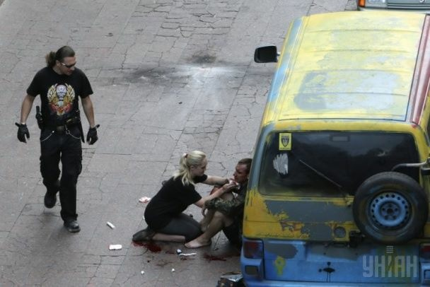
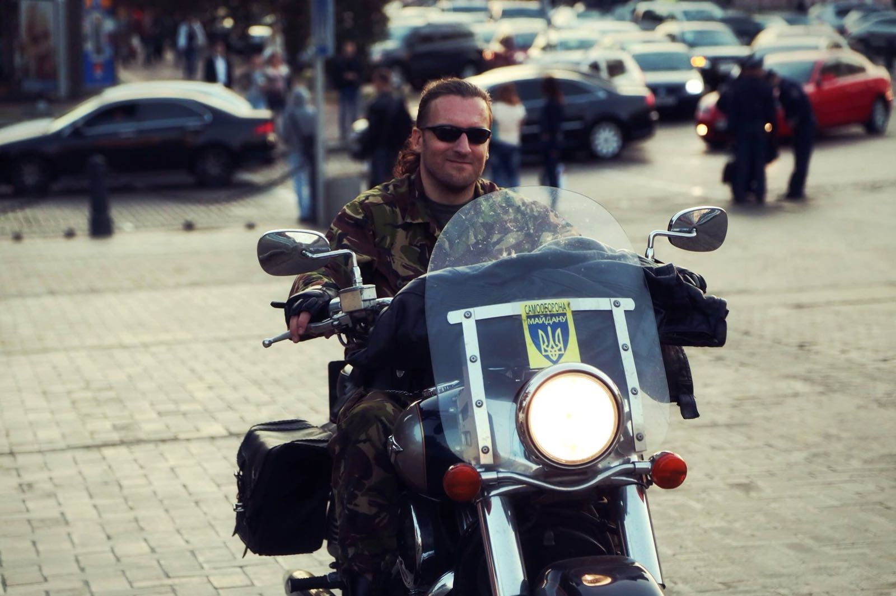
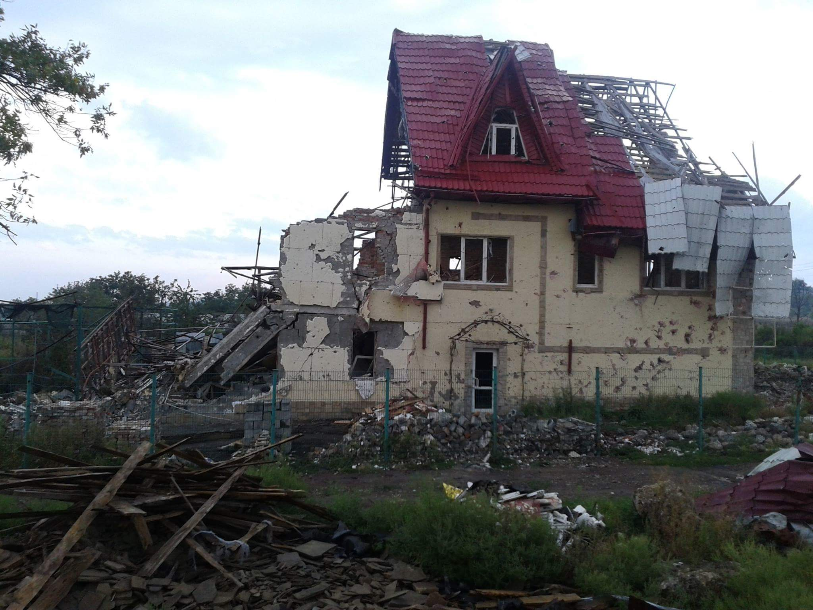
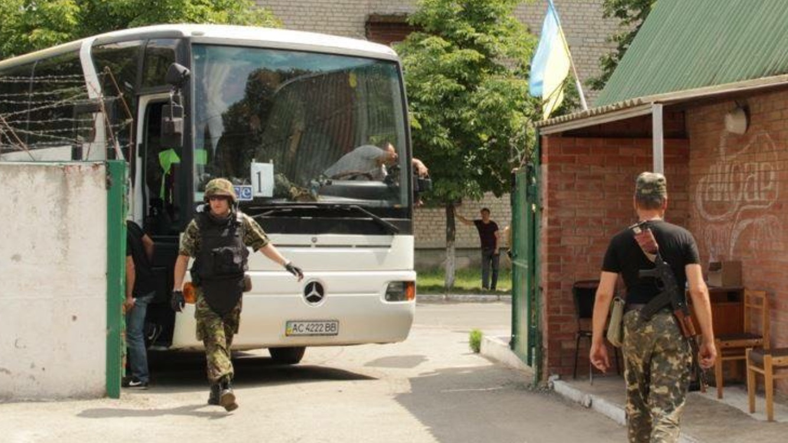
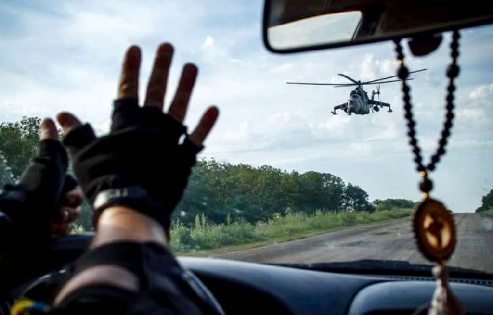

This
I don't have too many pictures of this part of my life. Just a couple made by the elite part of journalist's community who have a strong legs or good connections. This one from Unian have a strong legs. My guys did't catch him. Ukranian Revolution. Kiev. Maidan 2014.

This
picture made by my friend. Ukraine. Debaltsevo. Lughansk obl. 2014.

This
picture I did myself. Ukraine. Lughansk obl. 2014.

This
picture made by the journalist who have a good connections. Ukraine. Shast'e. Lughansk obl. 2014.

This
picture made by my friend. Ukraine. Lughansk obl. 2014.